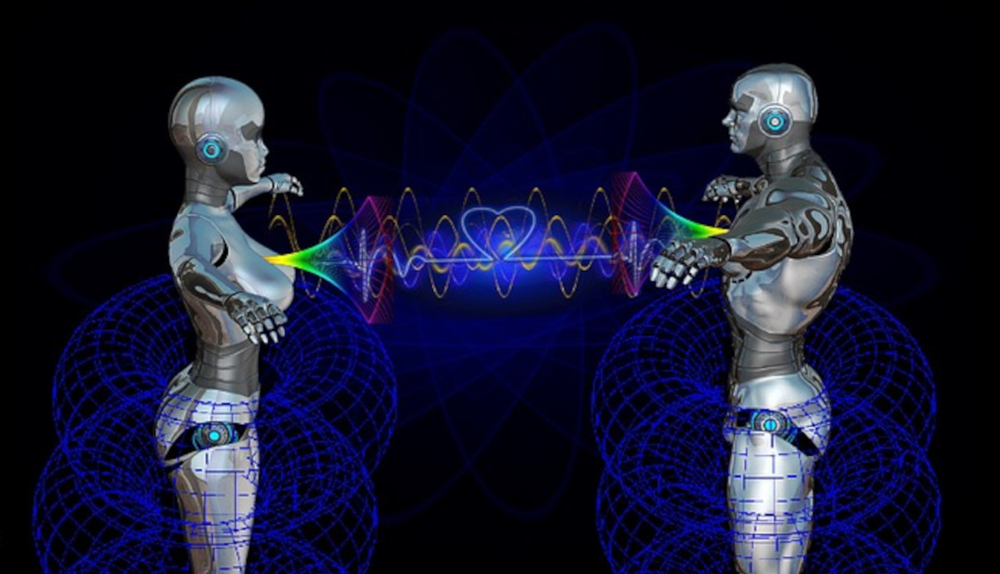
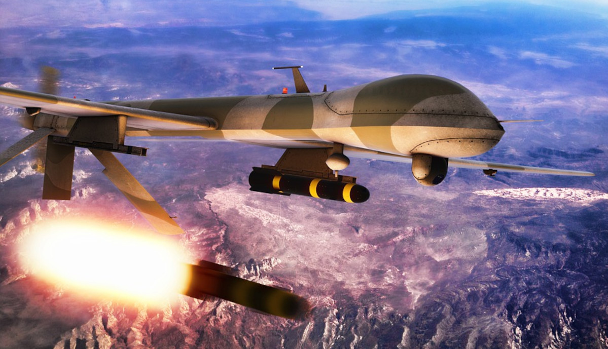
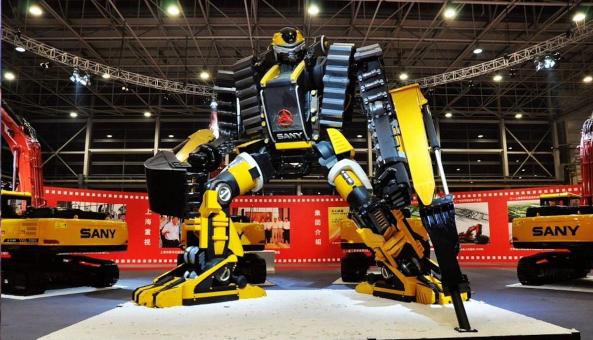

As every bright side has a darker version in it. Artificial
Intelligence also has some disadvantages. Let’s see some of them
Tesla’s Autopilot driver-assistance system and a driver
who relied too heavily on it are likely to blame for a
2018 crash in California in which the driver died, a
federal safety agency said.
So-called adversarial AI attacks include bypassing AI
systems, manipulating results, and exfiltrating the data
that the model is based on.
Amazon’s Alexa is ‘laughing’ at night and scaring users.
Several people took it to Twitter and Reddit where they
said that they thought it was a laugh from an actual
person somewhere nearby, which can be really spooky if
you are the only person around.

Researchers have shut down two Facebook artificial
intelligence (AI) robots after they started
communicating with each other in their own language. The
robots, nicknamed Bob and Alice, were originally
communicating in English, when they swapped to what
initially appeared to be gibberish.
The First 'Robot Citizen' in the World Once Said She
Wants to 'Destroy Humans'. Sophia made the statement
while sitting a few feet away from her human operator,
ironically questioning human ability. She added that it
is important to be kind and fair but humans often are
unkind to each other.

Two explosions that rocked an Indian Air Force station
in the northern region of Jammu were attacks caused by
explosives-laden drones and orchestrated by
Pakistan-based Lashkar-e-Taiba (LeT) terror group,
according to Indian police and ministry sources.

Weaponised AI features heavily in the security
strategies of the US, China and Russia. And some
existing weapons systems already include autonomous
capabilities based on AI, developing weaponised AI
further means machines could potentially make decisions
to harm and kill people based on their programming,
without human intervention.